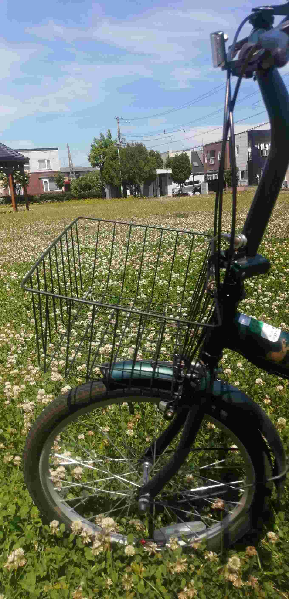
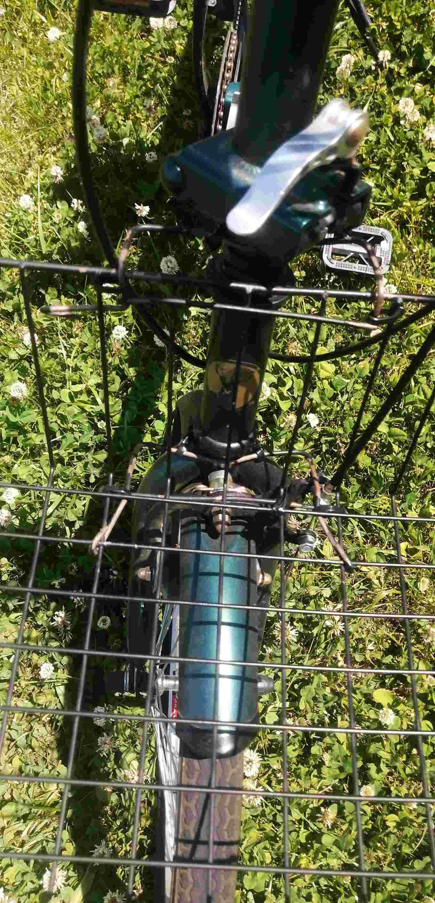

中古2980円のタブレット（Qua tab 02 2016年発売）のタブレットカバーを100円ショップで買いたかったが、なかったのでipad用（330円）で代用。
苦肉の策である。
ipad用のは縦が25.0cm、Qua tab 02は25.9cmである。わずが9mmなので、強引に入れれば入るだろうと考えたが・・・・。プラスチック製のカバーなのでどうしようもなく。
というよりも、9mmは結構大きい。完全にはみ出ていてどうしようもないサイズ。

なので、こうした。完成はこうだ！以下画像


材質はポリカーボネート。これが曲者。カッターでは切れない。ハサミでもびくともせず。しかし、ペンチで割ろうすると割れずに曲がる。
「曲がるのかよ！」といった感想。最初に知っていれば・・・・・,、もっと上手くできたのに・・・・
ダイソーの自転車用ではないカゴ（200円）を自転車のかごにした話
この自転車は、一年ほど前に買った。カゴ付きだと2000円近く高くなるので、カゴなしのを買った。が、やはりかごないと何かと不便。特に夏。リュックが背中と蒸れて・・・・・・。飲み物飲むたびにリュックを開けて・・・・・・。とても面倒だ。
なので、カゴをつけることにした。が、自転車用のかごを買うと、3000円・・・・・・・。買いたくない。そういうわけで、DIYの味方、ダイソーだ！
ダイソーのかごである。本当は、藤カゴ風なのがかっこよくてよかったのだが、なかったので別のもの。
元の写真がないが、金属製のかごである。黒である。左右に取っ手がついているやつである。口径が小さい自転車なので、小さめのかごである。
取っ手をペンチでひねって取り外し、自転車に固定する器具として使用した。とりあえずは、ついた。が、くるくる回る。上下には動かない。物を入れても大丈夫。が、左右にくるくる回る。ここの固定ができない。
ひもや針金でぐるぐる巻いて固定しようとしても、くるくる回る。滑り止めになるようなものを何か挟む必要があるだろう。ゴムっぽいものを挟んだ。くるくる回る。
結論：
自転車に乗っているときに回るのは少しだけなので、その都度動かして元の位置に戻せばよい。
見た目は、他の自転車のカゴと比較しても遜色はない。むしろ余計なものが一切なくシンプルで、かつ軽くて良いくらいだ。
追加報告：
くるくる回る問題は解決しました。完成写真がこちら。


